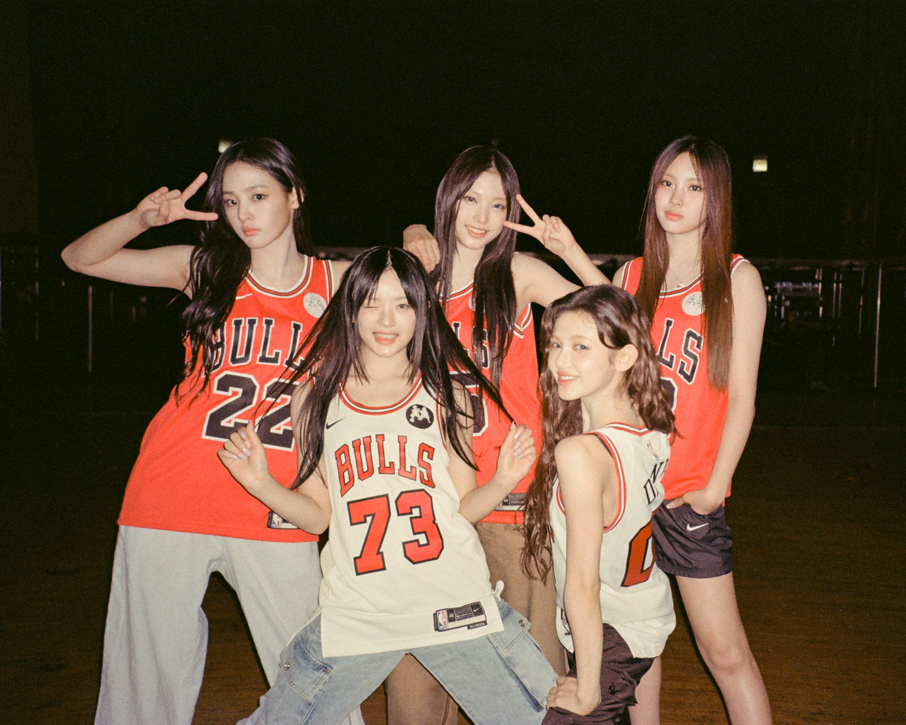
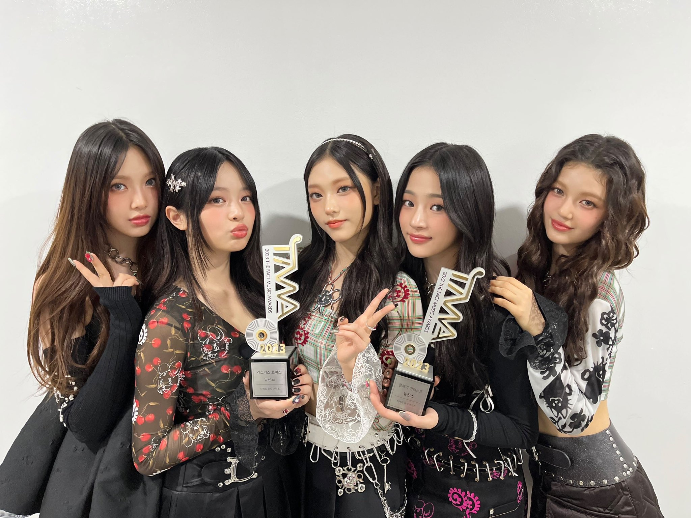

NEWHAIR NEWTEE NEWJEANS DO YOU SEE
"NewJeans: Girl Group Baru yang Penuh Talenta"
NewJeans adalah girl group baru yang telah mencuri perhatian para penggemar musik K-pop dengan pesona dan bakat mereka yang memukau. Grup ini terdiri dari lima anggota berbakat yang memiliki keahlian dalam menyanyi, menari, dan bahkan menulis lirik lagu mereka sendiri. Mereka telah merilis beberapa single yang sukses dan mendapatkan banyak pengikut setia di seluruh dunia. Dengan vokal yang kuat dan tarian yang mengagumkan, NewJeans adalah girl group yang patut diperhitungkan dalam industri musik K-pop.
"Perjalanan Sukses NewJeans: Dari Debut Hingga Puncak Kepopuleran"

Girl group NewJeans telah menunjukkan peningkatan pesat sejak debut mereka beberapa tahun yang lalu. Mereka mulai sebagai peserta dalam berbagai kompetisi bakat, yang akhirnya membantu mereka mendapatkan pengakuan dari label musik terkemuka. Setelah debut mereka, NewJeans terus merilis lagu-lagu yang memukau penggemar dengan campuran musik yang segar dan lirik yang kuat. Mereka juga aktif dalam kegiatan amal dan memiliki hubungan yang erat dengan penggemar mereka. Dengan dedikasi dan bakat mereka, NewJeans adalah girl group yang semakin meningkat dalam industri K-pop.
"Mengenal Lebih Dekat Anggota NewJeans: Profil dan Prestasi Mereka"
New Jeans sudah mampu mencetak berbagai prestasi dari berbagai lagu yang dirilisnya. Hingga Januari 2022, grup wanita yang memiliki lambang kelinci ini sudah memiliki enam lagu, yaitu Attention, Hype Boy, Cookie, Hurt, Ditto, dan OMG. Lagu-lagu tersebut sukses menduduki posisi teratas dalam tangga lagu Korea Selatan berminggu-minggu.
"Rilis Album Baru Berjudul 'Get Up'

Setelah sukses menduduki posisi wahid tangga lagu Music Bank dengan single 'OMG', grup girlband Korea New Jeans bakal comeback. New Jeans kabarnya akan comeback lewat album baru berjudul Get Up pada bulan depan, atau tepatnya pada Jumat (21/7/2023) mendatang.